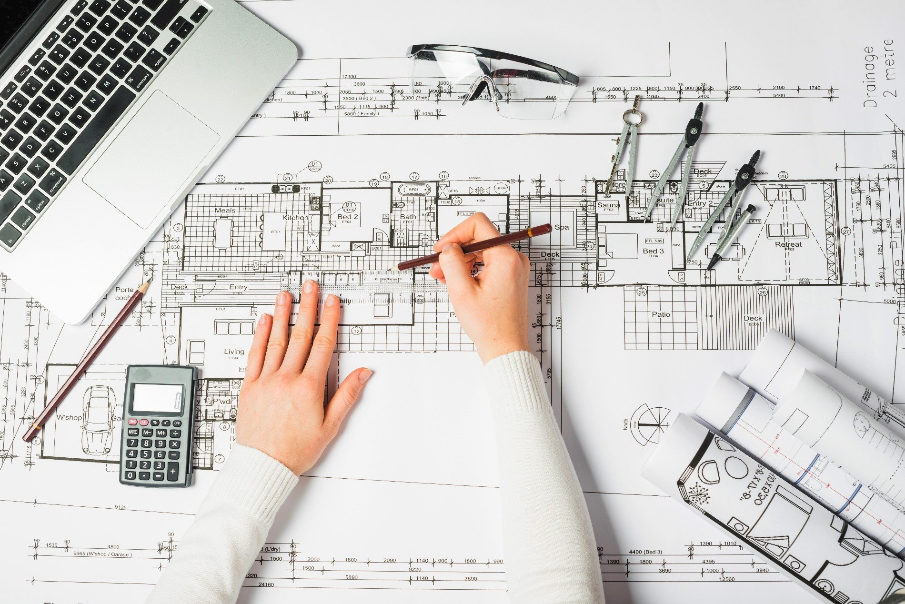

Architecture is the study, art and practice of designing buildings and other structures (such as web architecture). The term is also used to describe the structural design of an object, i.e. a building’s architecture. The word itself comes from the Greek arkhitekton, which means ‘chief’ (arkhi) ‘creator’ (tekton) and, thus, refers to the person carrying out the structural design: the architect.
The practice of architecture helps to root civilisations according to certain design conventions. We can identify civilisations according to their remaining architectural feats, in other words. This is very likely the reason why architecture has become so lauded as a profession and that buildings have come to be recognised as important symbols of particular cultures and, in many cases, works of high art..
The philosophy of architecture:
Architecture is a branch of the wider philosophy of art, which focuses on the aesthetic properties of buildings, i.e. perceived beauty within the built environment, as well as the logical semantics of architecture, i.e. the meaning of structures, such as what we can assume about the architect’s intention and what buildings’ implications are on the wider contexts of community, politics, history and so on.
The philosophy of architecture examines issues concerning the nature of architecture as an art form, design medium or other production/manufacturing process. It looks into architectural products: what they are; how they are distinguished from non-architectural objects; how we collectively refer to them. It also explores particular architectural properties, such as space, form, light and how they might be considered especially architectural qualities.
Finally, architectural philosophy concerns itself with the various types of architecture – how we consider instances and groupings of architecture occurring on the landscape. As well as how we form our basic understanding of architecture and architectural objects, alongside the social, cultural and moral implications of the practice of architecture and its objects.
The history of architecture:
You have to go back two millennia, to early first Century AD, to find the very earliest writings on the subject of architecture, which were penned by Roman architect Vitruvius who defines the qualities of a good building as durability, utility and beauty (which are, completely coincidentally, almost identical to Riluxa’s three criteria for defining luxury: durable, beautifully designed and designed for life, i.e. made to be used).
Italian Renaissance architect Leon Battista Alberti developed Vitruvius’s ideas, suggesting that beauty is not as much about ornamental value as it is about proportion and that architecture must strive to achieve, and will be defined by its achievement of, ‘the golden mean’. The golden mean is when two parts of a whole – a and b – have a ratio that is the same as the ratio of their sum to the larger of the two quantities. The Great Mosque of Kairouan, in Tunisia, for instance, shows an application of the golden mean in the main part of its design. Architectural beauty was, therefore, based on inherent properties of an object, rather than on style, which was not developed until the 16th Century with the Lives of the Most Excellent Painters, Sculptors, and Architects series of biographies by Giorgio Vasari.
Vasari’s writings were a European smash hit by the time of the 18th Century and had been translated into four different languages. This gave rise to a wider public interest in the discourse of architecture and, by 1836 with the publishing of English Architect Augustus Welby Northmore Pugin’s Contrasts, a dialogue concerning the aesthetic differences between the modern, industrial world and the idealised neo-medieval world of Gothic architecture was well underway.
19th Century English architectural and art critic John Ruskin was among the first to write on the philosophical implications of architectural beauty as an aid to “mental health, power and pleasure” and developed the idea that buildings must be “adorned” – not just well-proportioned – if they are to achieve aesthetic excellence. And, as the 19th Century turned into the 20th, a polemic on the difference between architecture and simple construction was first given attention via the writings of architect Charles-Édouard Jeanneret, better known as Le Corbusier, who distinguished architecture by its ability to, “touch my heart… do me good. I am happy and I say: This is beautiful.”
